Data visualization and ggplot2
Data visualization
In this class, we’ll learn how to use the package
ggplot2 to visualize your data.
library(ggplot2)
library(dplyr)
library(tidyr)Descriptive and inferential statistics are incredibly useful for understanding your data. However, as we have discussed, they are models and models always have error. We have to live with a certain amount of error, but we should make sure that our model is at least useful. For example, is a statement like “the vast majority of humans have more than the mean number of eyes” all that useful? One way that we can assess the usefulness of our numeric models is to visualize the data.
Let’s look at the “anscombe” data set that comes with the base R
package datasets.
data("anscombe")
str(anscombe)## 'data.frame': 11 obs. of 8 variables:
## $ x1: num 10 8 13 9 11 14 6 4 12 7 ...
## $ x2: num 10 8 13 9 11 14 6 4 12 7 ...
## $ x3: num 10 8 13 9 11 14 6 4 12 7 ...
## $ x4: num 8 8 8 8 8 8 8 19 8 8 ...
## $ y1: num 8.04 6.95 7.58 8.81 8.33 ...
## $ y2: num 9.14 8.14 8.74 8.77 9.26 8.1 6.13 3.1 9.13 7.26 ...
## $ y3: num 7.46 6.77 12.74 7.11 7.81 ...
## $ y4: num 6.58 5.76 7.71 8.84 8.47 7.04 5.25 12.5 5.56 7.91 ...head(anscombe)## x1 x2 x3 x4 y1 y2 y3 y4
## 1 10 10 10 8 8.04 9.14 7.46 6.58
## 2 8 8 8 8 6.95 8.14 6.77 5.76
## 3 13 13 13 8 7.58 8.74 12.74 7.71
## 4 9 9 9 8 8.81 8.77 7.11 8.84
## 5 11 11 11 8 8.33 9.26 7.81 8.47
## 6 14 14 14 8 9.96 8.10 8.84 7.04The anscombe data set has eight variables, each with 11 observations.
We’ll use dplyr to get summary statistics. But before,
let’s convert the data into a “long” format so that it’s a bit easier to
work with. We’ll use the tidyr function
pivot_longer. The argument cols selects the
columns that you want to pivot. Since we only have numeric variables, we
can pivot everything to a long format. To do that, we’ll use
cols = everything(). The anscombe data contains 4 sets of
\(x\) and \(y\) data. The argument
names_to and names_pattern work in tandem to
restructure the data.
anscombe <- anscombe %>%
pivot_longer(cols = everything(),
names_to = c(".value", "set"),
names_pattern = "(.)(.)")
str(anscombe)## tibble [44 × 3] (S3: tbl_df/tbl/data.frame)
## $ set: chr [1:44] "1" "2" "3" "4" ...
## $ x : num [1:44] 10 10 10 8 8 8 8 8 13 13 ...
## $ y : num [1:44] 8.04 9.14 7.46 6.58 6.95 8.14 6.77 5.76 7.58 8.74 ...head(anscombe)## # A tibble: 6 × 3
## set x y
## <chr> <dbl> <dbl>
## 1 1 10 8.04
## 2 2 10 9.14
## 3 3 10 7.46
## 4 4 8 6.58
## 5 1 8 6.95
## 6 2 8 8.14anscombe %>%
group_by(set) %>%
summarise(mean_x = mean(x),
sd_x = sd(x),
mean_y = mean(y),
sd_y = sd(y
)
)## # A tibble: 4 × 5
## set mean_x sd_x mean_y sd_y
## <chr> <dbl> <dbl> <dbl> <dbl>
## 1 1 9 3.32 7.50 2.03
## 2 2 9 3.32 7.50 2.03
## 3 3 9 3.32 7.5 2.03
## 4 4 9 3.32 7.50 2.03What do you notice about the four sets?
For all four sets, the mean of x, mean of y, standard deviation of x,
and standard deviation of y are the same. So, the models that we have
used most in this class, tell us that these sets are pretty much the
same! So, we’re all done, right?
Let’s just double-check by visualizing the data.
ans_plot <- ggplot(data = anscombe, aes(x = x, y = y)) +
geom_point() +
facet_wrap(~set)
ans_plot
Uh… woah. These data now look pretty distinct. If we add a regression line (slope and intercept), we see that the lines are the same.
ans_plot +
geom_smooth(formula = y ~ x, method = "lm", se = FALSE, data = anscombe)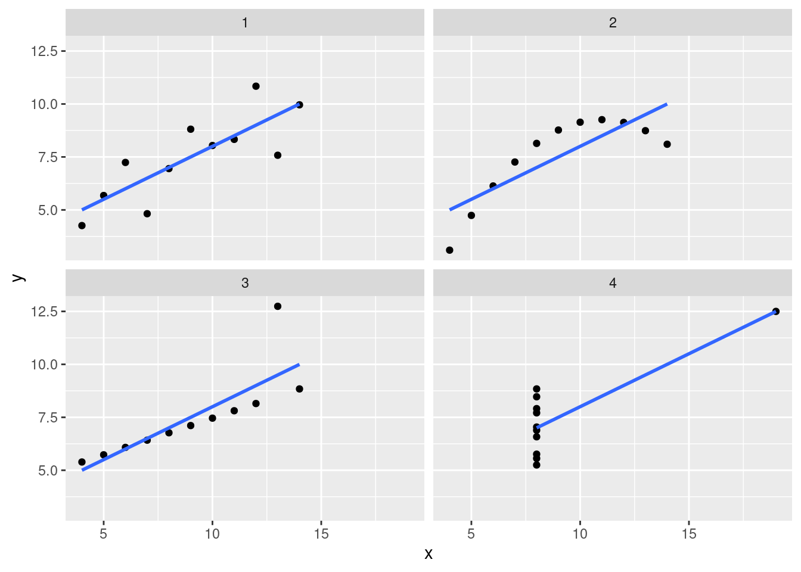
The quantitative stats that we have tell us that these are the same, yet a visual inspection reveals stark differences. ALWAYS PLOT YOUR DATA!!! (When/if we get into linear models, we’ll see that there are some model diagnostics that you can run that reveal differences.)
ggplot2
Let’s learn ggplot by playing around with the starwars
data set.
data("starwars")
## we'll clean it up like we did before
starwars <-
starwars %>%
select(-(films:starships))
head(starwars)## # A tibble: 6 × 11
## name height mass hair_…¹ skin_…² eye_c…³ birth…⁴ sex gender homew…⁵
## <chr> <int> <dbl> <chr> <chr> <chr> <dbl> <chr> <chr> <chr>
## 1 Luke Skywal… 172 77 blond fair blue 19 male mascu… Tatooi…
## 2 C-3PO 167 75 <NA> gold yellow 112 none mascu… Tatooi…
## 3 R2-D2 96 32 <NA> white,… red 33 none mascu… Naboo
## 4 Darth Vader 202 136 none white yellow 41.9 male mascu… Tatooi…
## 5 Leia Organa 150 49 brown light brown 19 fema… femin… Aldera…
## 6 Owen Lars 178 120 brown,… light blue 52 male mascu… Tatooi…
## # … with 1 more variable: species <chr>, and abbreviated variable names
## # ¹hair_color, ²skin_color, ³eye_color, ⁴birth_year, ⁵homeworldstr(starwars)## tibble [87 × 11] (S3: tbl_df/tbl/data.frame)
## $ name : chr [1:87] "Luke Skywalker" "C-3PO" "R2-D2" "Darth Vader" ...
## $ height : int [1:87] 172 167 96 202 150 178 165 97 183 182 ...
## $ mass : num [1:87] 77 75 32 136 49 120 75 32 84 77 ...
## $ hair_color: chr [1:87] "blond" NA NA "none" ...
## $ skin_color: chr [1:87] "fair" "gold" "white, blue" "white" ...
## $ eye_color : chr [1:87] "blue" "yellow" "red" "yellow" ...
## $ birth_year: num [1:87] 19 112 33 41.9 19 52 47 NA 24 57 ...
## $ sex : chr [1:87] "male" "none" "none" "male" ...
## $ gender : chr [1:87] "masculine" "masculine" "masculine" "masculine" ...
## $ homeworld : chr [1:87] "Tatooine" "Tatooine" "Naboo" "Tatooine" ...
## $ species : chr [1:87] "Human" "Droid" "Droid" "Human" ...The basic syntax of ggplot2 typically requires an
argument for your data, data = and an aesthetic argument
aes(). Within the aes() argument, you will
specify the data that will be used on the x-axis and y-axis.
ggplot(data = starwars, aes(x = height, y = mass))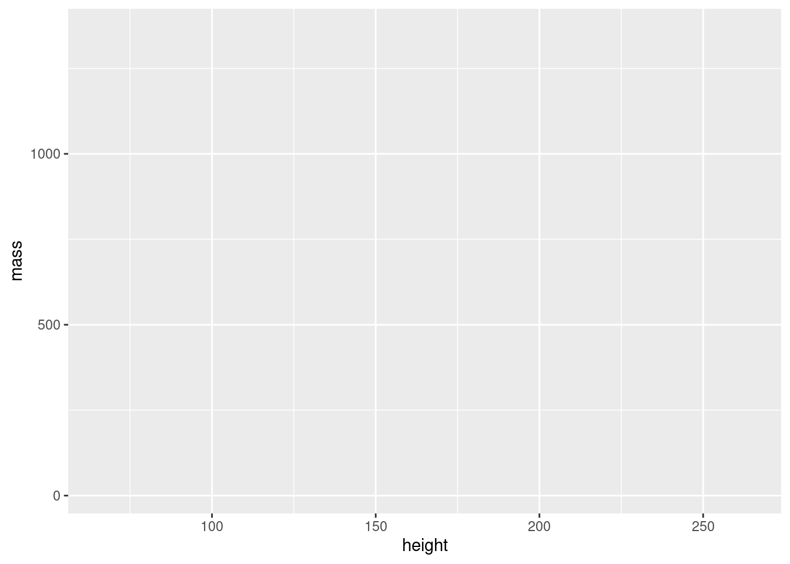
You’ll notice that there are axis labels and the ranges match with our data but the data doesn’t appear in the plot. If you subset the data, you’ll notice that the ranges change (the data still doesn’t show).
sw_human_data <-
starwars %>%
filter(species == "Human")
ggplot(data = sw_human_data, aes(x = height, y = mass))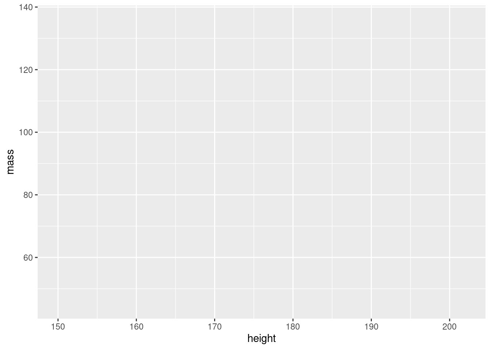
The data does not appear because ggplot2 does not assume
the type of plot you want, so you must specify this information. YOu can
do this by using the operator + and functions which usually
start with geom_. For example, for scatter plots use
geom_point(), for boxplots use geom_boxplot(),
for a histogram geom_histogram().
ggplot(data = sw_human_data, aes(x = height, y = mass)) +
geom_point()## Warning: Removed 13 rows containing missing values (geom_point).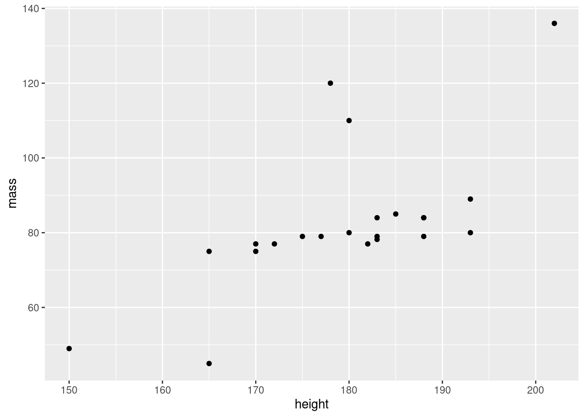
ggplot(data = sw_human_data, aes(x = gender, y = height)) +
geom_boxplot()## Warning: Removed 4 rows containing non-finite values (stat_boxplot).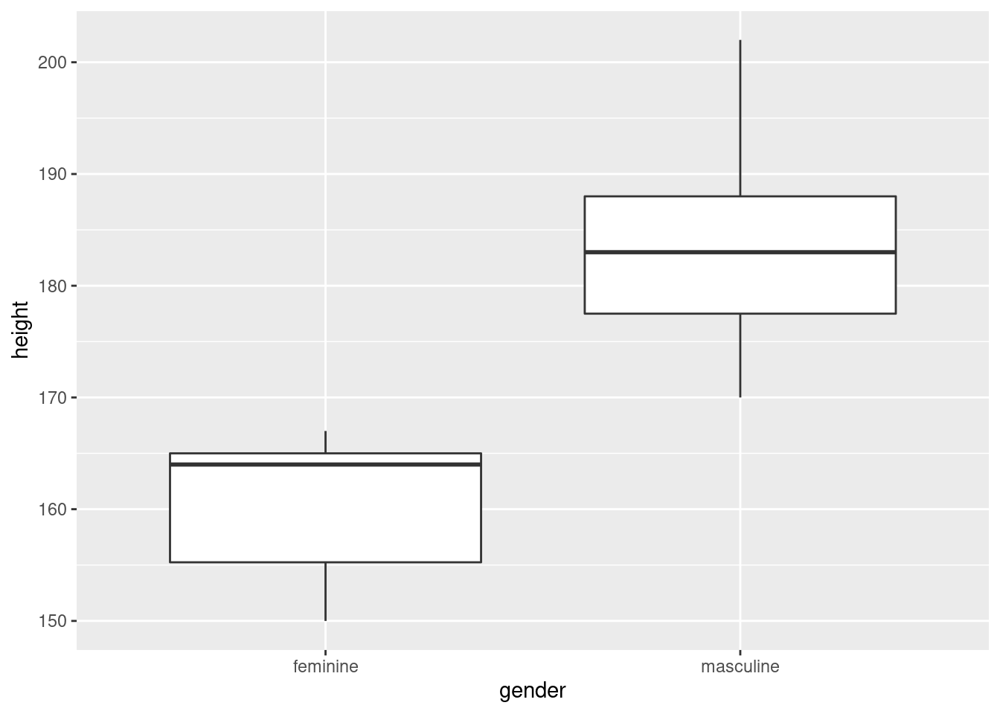
ggplot(data = sw_human_data, aes(x = height)) +
geom_histogram()## `stat_bin()` using `bins = 30`. Pick better value with `binwidth`.## Warning: Removed 4 rows containing non-finite values (stat_bin).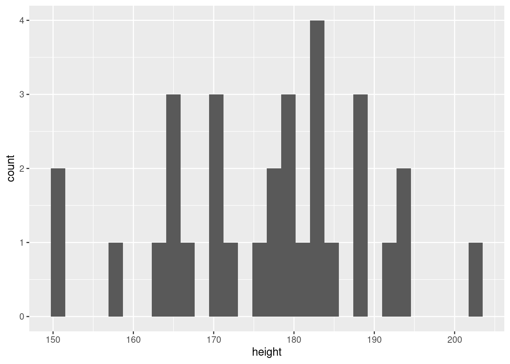
(Note: There are NAs in this data set. ggplot2 will
remove them by default but produces a warning message - “removed n rows
containing non-finite values”; “removed n rows containing missing
values”. Be careful, though, ggplot2 will use the same
warning message if it removes data because of NAs or if it removes them
because the axes are mis-specified. If you get this message make sure
you know why it is being produced.)
These plots are pretty basic and do not have titles or useful axis labels, but ggplot2 gives you tons of flexibility in adjusting your plots. Let’s start with some scatter plots.
Scatter plots
First, let’s modify the axis and title labels:
ggplot(data = sw_human_data, aes(x = height, y = mass)) +
geom_point() +
labs(title = "Human height and mass", subtitle = "In the Star Wars universe", x = "Height (cm)", y = "Mass (kg)")## Warning: Removed 13 rows containing missing values (geom_point).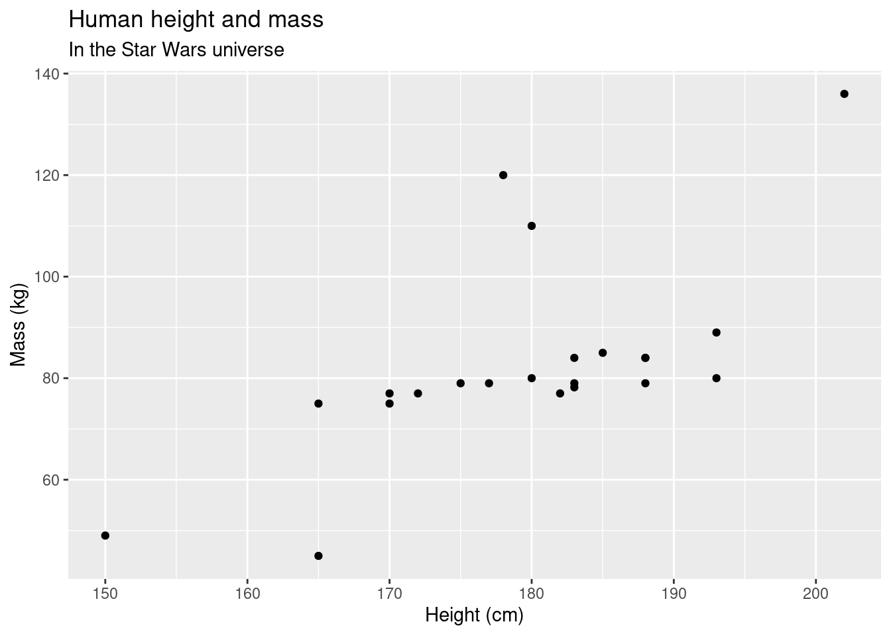
We can also modify how the points appear by adjusting the parameters
in geom_point()
ggplot(data = sw_human_data, aes(x = height, y = mass)) +
geom_point(size = 5, shape = 17, color = "red") +
labs(title = "Human height and mass", subtitle = "In the Star Wars universe", x = "Height (cm)", y = "Mass (kg)")## Warning: Removed 13 rows containing missing values (geom_point).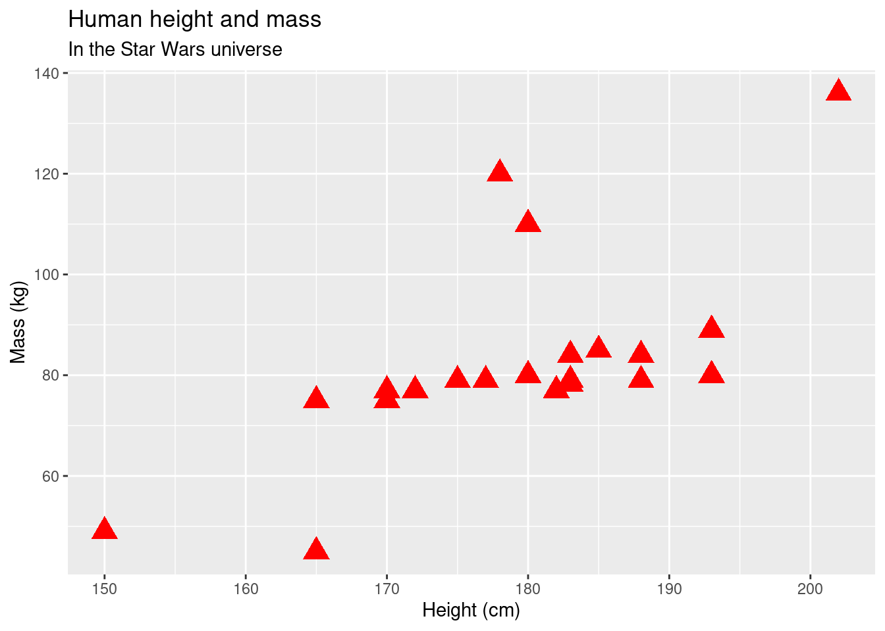
What if we want to look at how height and mass break down by group?
ggplot(data = sw_human_data, aes(x = height, y = mass, color = eye_color)) +
geom_point(size = 5) +
labs(title = "Human height and mass", subtitle = "In the Star Wars universe", x = "Height (cm)", y = "Mass (kg)")## Warning: Removed 13 rows containing missing values (geom_point).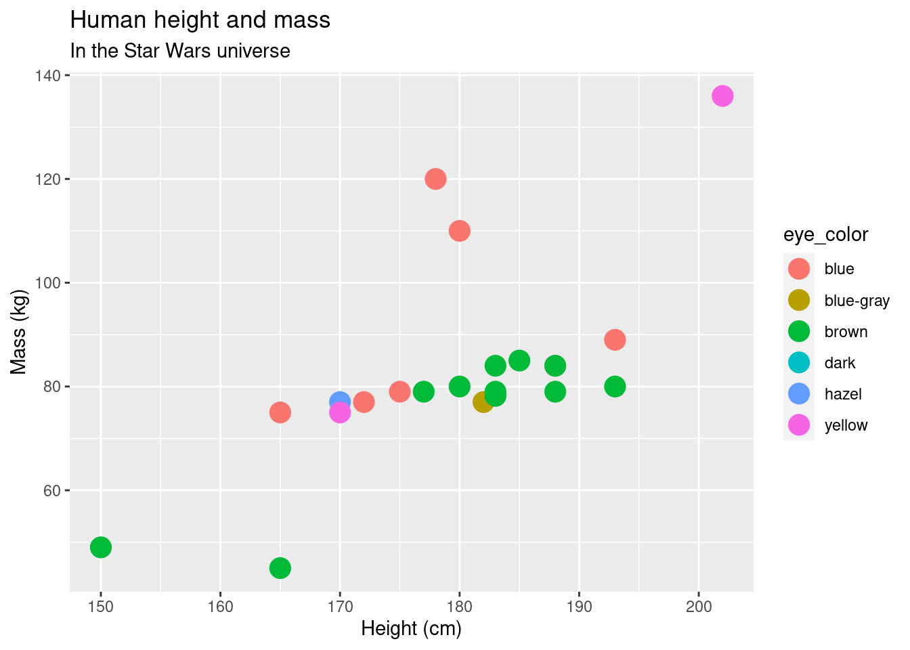
This is somewhat confusing, though. The colors in the plot don’t
match the eye color. While this probably won’t be a problem you
encounter often, specifying colors manually can be quite useful.
Functions which give you more control over the colors or shapes of
points typically start with scale_ (e.g.,
scale_fill_manual(), scale_color_discrete(),
scale_shape_manual()). R uses hexadecimal to represent
colors. You can look up the hex values, but R also has hundreds of
built-in color names. You can find those color names here: “http://www.stat.columbia.edu/~tzheng/files/Rcolor.pdf”
Note: No need to worry too much about ‘hexadecimal’. If you are interested, it is a base-16 numerical system. Each color is represented by a hashtag followed 6 characters; 2 for red, 2 for green, and 2 for blue. …
ggplot(data = sw_human_data, aes(x = height, y = mass, color = eye_color)) +
geom_point(size = 5) +
scale_color_manual(values = c("blue", "lightblue", "tan", "tan4", "forestgreen", "yellow")) +
labs(title = "Human height and mass", subtitle = "In the Star Wars universe", x = "Height (cm)", y = "Mass (kg)")## Warning: Removed 13 rows containing missing values (geom_point).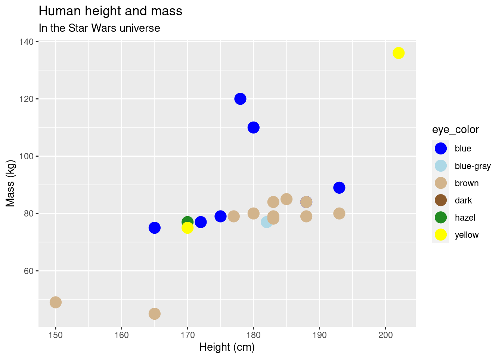
You can also change the colors withouth specifying colors manually.
This is useful if you don’t need to specify exactly which colors go with
with group, but you need a different color palette than the default. By
using a palette you can improve the look of your graphs relatively
easily. Some journals have color preferred color palettes. You can also
make your graphs color-blind friendly. The package
RColorBrewer has created palettes that are compatible with
ggplot2 and contain metadata which let you know if the
palette is color-blind friendly or not.
library(RColorBrewer)
head(brewer.pal.info, 10)## maxcolors category colorblind
## BrBG 11 div TRUE
## PiYG 11 div TRUE
## PRGn 11 div TRUE
## PuOr 11 div TRUE
## RdBu 11 div TRUE
## RdGy 11 div FALSE
## RdYlBu 11 div TRUE
## RdYlGn 11 div FALSE
## Spectral 11 div FALSE
## Accent 8 qual FALSEggplot(data = sw_human_data, aes(x = height, y = mass, color = eye_color)) +
geom_point(size = 5) +
scale_colour_brewer(palette = "RdYlBu") +
labs(title = "Human height and mass", subtitle = "In the Star Wars universe", x = "Height (cm)", y = "Mass (kg)")## Warning: Removed 13 rows containing missing values (geom_point).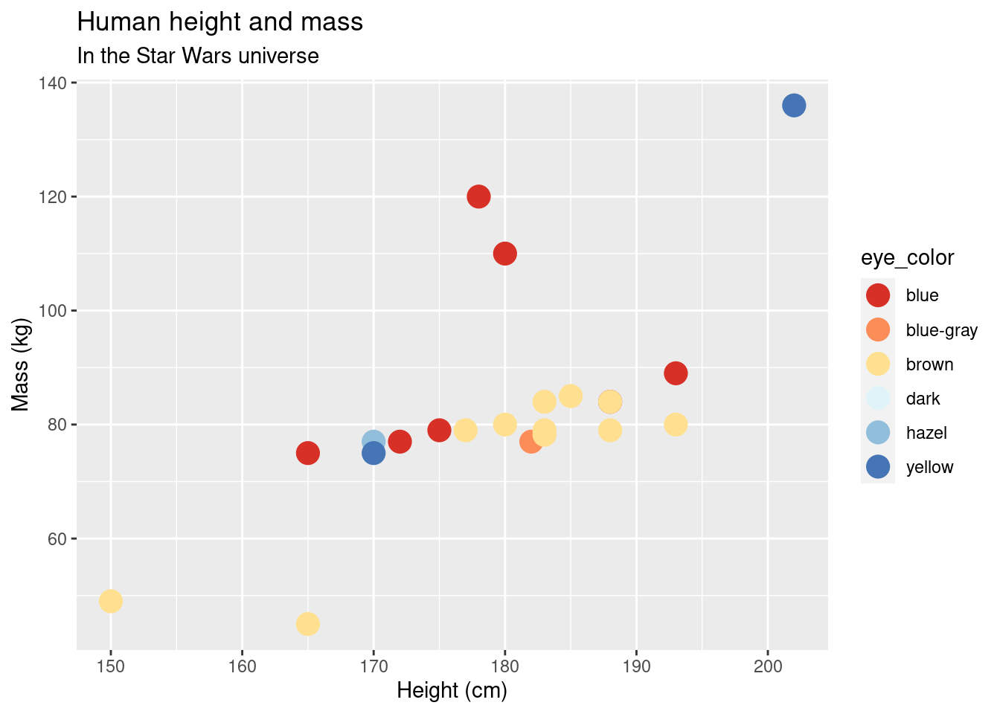
What happens if you have an outlier?
ggplot(data = starwars, aes(x = height, y = mass)) +
geom_point(size = 2) +
scale_colour_brewer(palette = "RdYlBu") +
labs(title = "Height and mass", subtitle = "In the Star Wars universe", x = "Height (cm)", y = "Mass (kg)")## Warning: Removed 28 rows containing missing values (geom_point).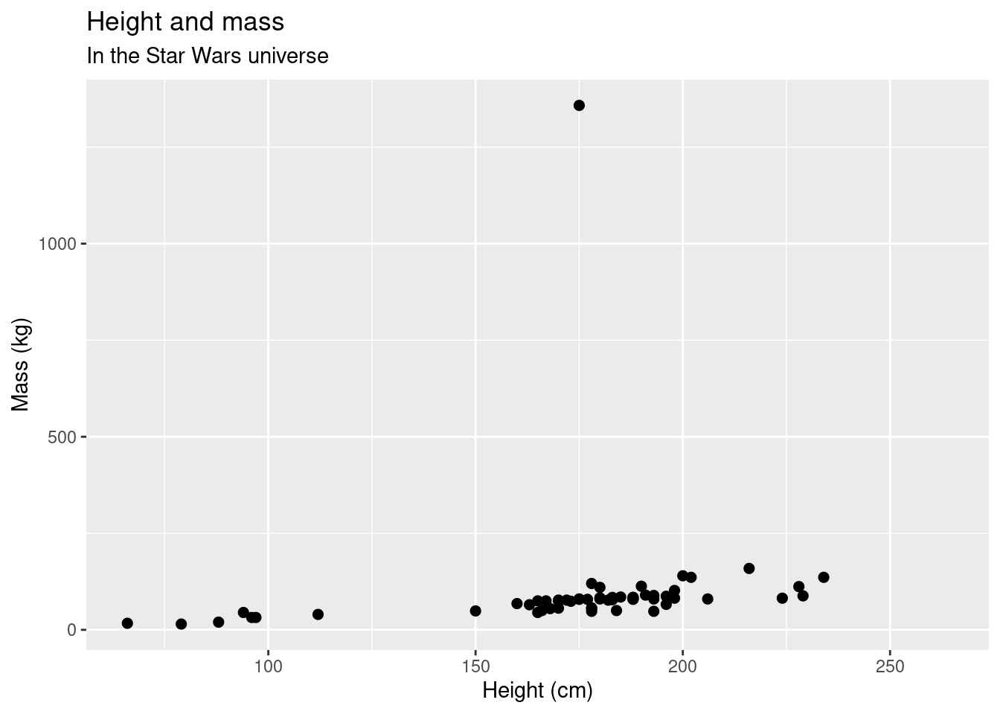
You can change the axes on your plot. However, be careful, some methods could have unintended consequences. Let’s look at an example:
ggplot(data = starwars, aes(x = height, y = mass)) +
geom_point(size = 2) +
scale_colour_brewer(palette = "RdYlBu") +
labs(title = "Height and mass", subtitle = "In the Star Wars universe", x = "Height (cm)", y = "Mass (kg)") +
ylim(c(0,200)) +
xlim(c(0,250))## Warning: Removed 29 rows containing missing values (geom_point).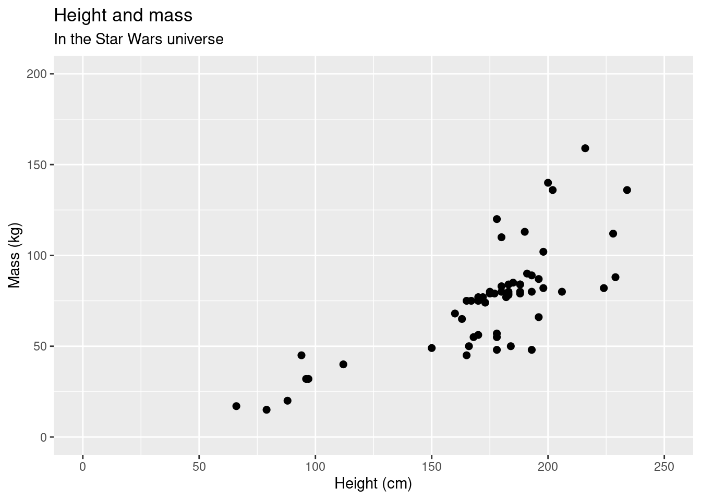
If we remove the really heavy individual, we can see the height-mass relationship a bit better. We can apply a data smoothing function that will give you a linear regression line with confidence intervals.
ggplot(data = starwars, aes(x = height, y = mass)) +
geom_point(size = 2) +
scale_colour_brewer(palette = "RdYlBu") +
labs(title = "Height and mass", subtitle = "In the Star Wars universe", x = "Height (cm)", y = "Mass (kg)") +
ylim(c(0,200)) +
xlim(c(50,250)) +
geom_smooth(method = 'lm')## `geom_smooth()` using formula 'y ~ x'## Warning: Removed 29 rows containing non-finite values (stat_smooth).## Warning: Removed 29 rows containing missing values (geom_point).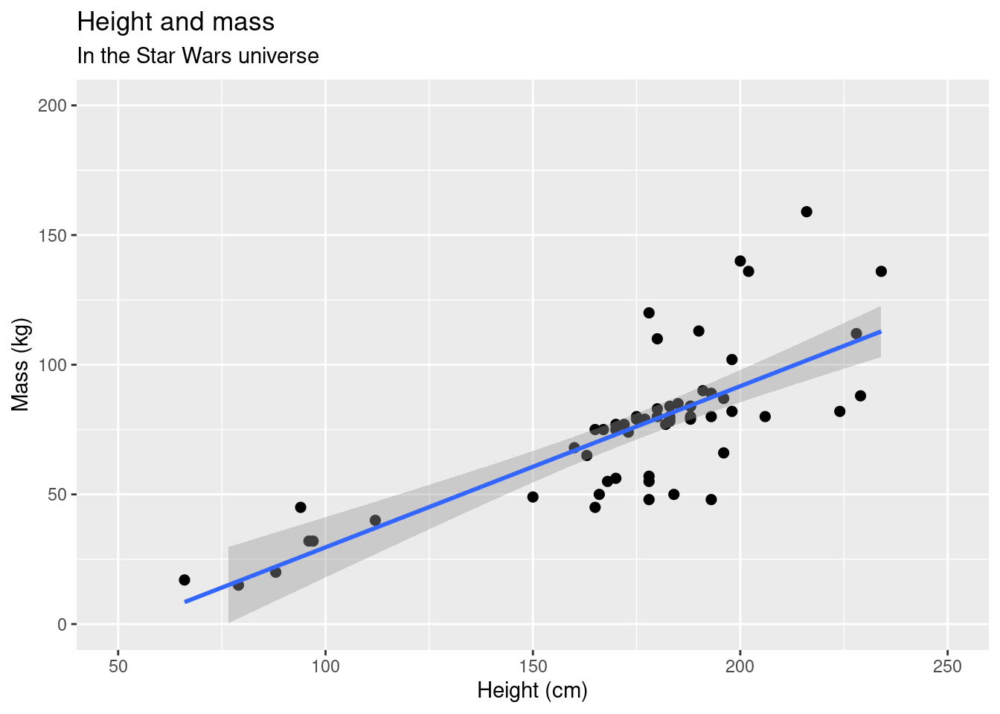
However, the model only applies the linear model calculation to the
data points that actually appear. If we use
coord_cartesian() around xlim() and
ylim(), we’ll see a big difference.
ggplot(data = starwars, aes(x = height, y = mass)) +
geom_point(size = 2) +
scale_colour_brewer(palette = "RdYlBu") +
labs(title = "Height and mass", subtitle = "In the Star Wars universe", x = "Height (cm)", y = "Mass (kg)") +
coord_cartesian(xlim = c(50, 250),
ylim = c(0, 200)) +
stat_smooth(method = 'lm')## `geom_smooth()` using formula 'y ~ x'## Warning: Removed 28 rows containing non-finite values (stat_smooth).## Warning: Removed 28 rows containing missing values (geom_point).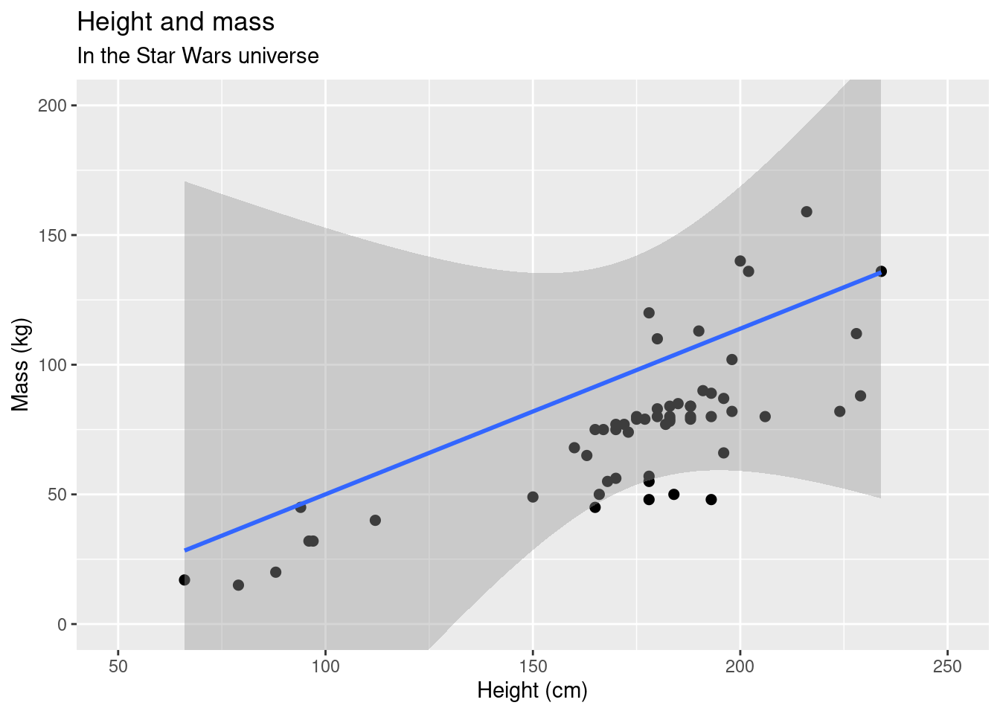
Notice how the slope and intercept are different in the two plots and
the grey area (the confidence interval) is much larger in the second
plot. The function coord_cartesian() calculates based on
the data in the data frame, not the data that is plotted.
coord_cartesian() basically zooms into the data, while
xlim() and ylim() by themselves subset the
data area. You might not use the geom_smooth() function
much, but you will likely use geom_boxplot().
ggplot(data = sw_human_data, aes(x = gender, y = height)) +
geom_boxplot() +
ylim(c(150, 190))## Warning: Removed 8 rows containing non-finite values (stat_boxplot).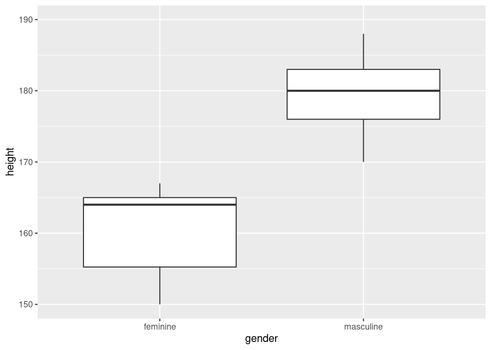
ggplot(data = sw_human_data, aes(x = gender, y = height)) +
geom_boxplot() +
coord_cartesian(ylim = c(150, 190))## Warning: Removed 4 rows containing non-finite values (stat_boxplot).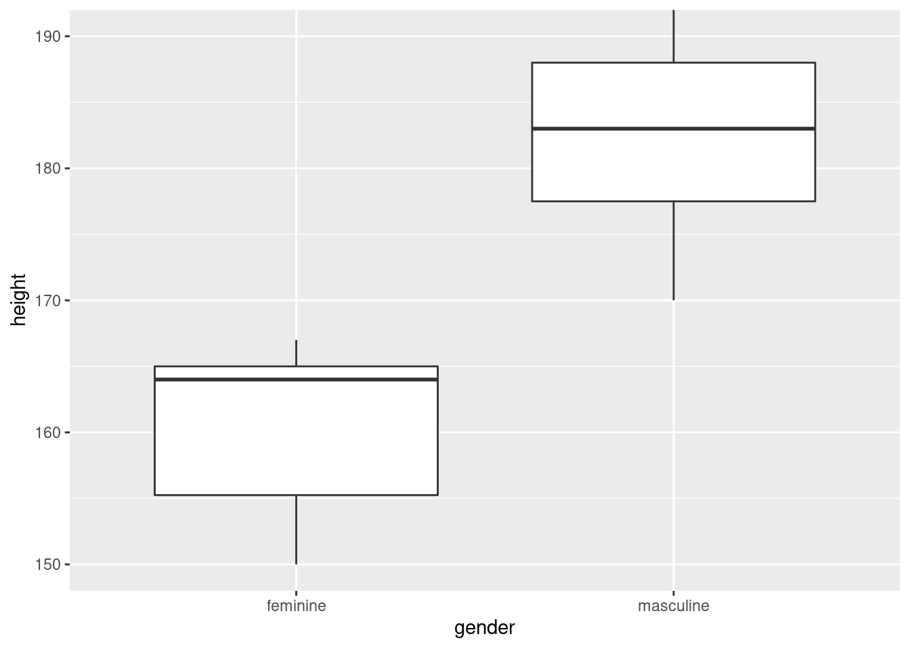
When we manually set the y axis limits without using
coord_cartesian, the median height of masculine characters
differs by about 3 cm.
Box plots and violin plots
ggplot(data = sw_human_data, aes(x = gender, y = height)) +
geom_boxplot() +
labs(title = "Height by gender", subtitle = "In the Star Wars universe",x = "Gender", y = "Height (cm)")## Warning: Removed 4 rows containing non-finite values (stat_boxplot).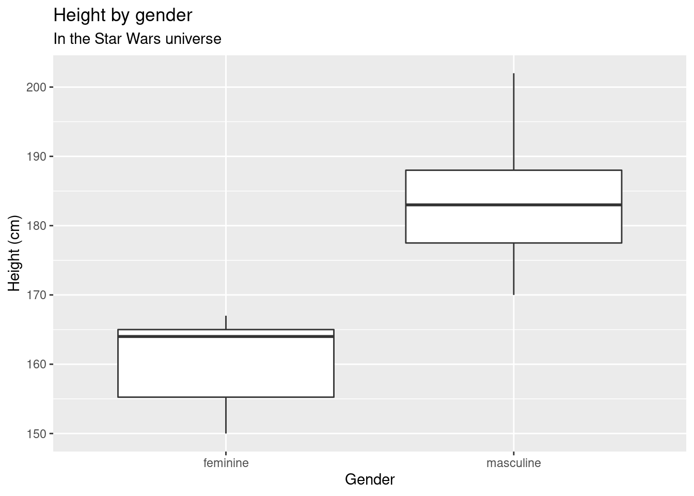
One of the benefits of ggplot2 is that you can easily (once you get used to the ggplot2 syntax) combine different types of visualizations. You can overlay a violin plot with box plots while plotting the individual data points all in one plot
ggplot(data = sw_human_data, aes(x = gender, y = height)) +
geom_violin() +
geom_boxplot(width = 0.25) +
geom_jitter(size = 3, width = 0.25) + # geom_jitter in geom_point() but with the points "jittered"
labs(title = "Height by gender", subtitle = "In the Star Wars universe",x = "Gender", y = "Height (cm)")## Warning: Removed 4 rows containing non-finite values (stat_ydensity).## Warning: Removed 4 rows containing non-finite values (stat_boxplot).## Warning: Removed 4 rows containing missing values (geom_point).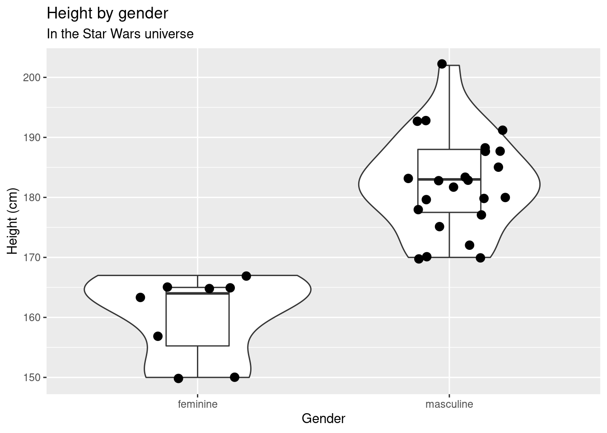
You can continue to add more groups or variables for more complex plots.
ggplot(data = sw_human_data, aes(x = gender, y = height)) +
geom_violin() +
geom_boxplot(width = 0.25) +
geom_jitter(size = 3, width = 0.25, aes(color = homeworld)) + # geom_jitter in geom_point() but with the points "jittered"
labs(title = "Height by gender", subtitle = "In the Star Wars universe",x = "Gender", y = "Height (cm)")## Warning: Removed 4 rows containing non-finite values (stat_ydensity).## Warning: Removed 4 rows containing non-finite values (stat_boxplot).## Warning: Removed 4 rows containing missing values (geom_point).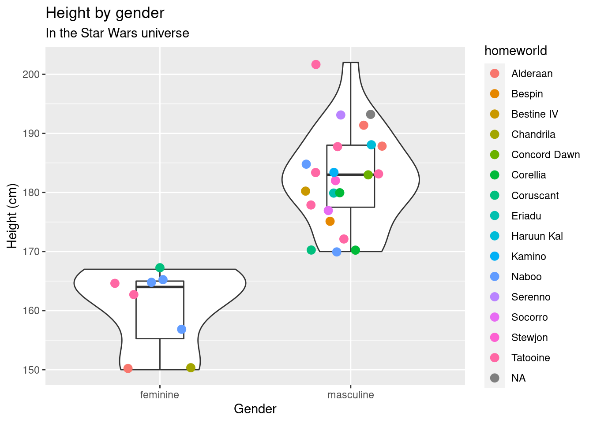
ggplot(data = sw_human_data, aes(x = gender, y = height)) +
geom_violin() +
geom_boxplot(width = 0.25) +
geom_jitter(size = 3, width = 0.25, aes(color = mass)) + # geom_jitter in geom_point() but with the points "jittered"
labs(title = "Height by gender", subtitle = "In the Star Wars universe",x = "Gender", y = "Height (cm)")## Warning: Removed 4 rows containing non-finite values (stat_ydensity).## Warning: Removed 4 rows containing non-finite values (stat_boxplot).## Warning: Removed 4 rows containing missing values (geom_point).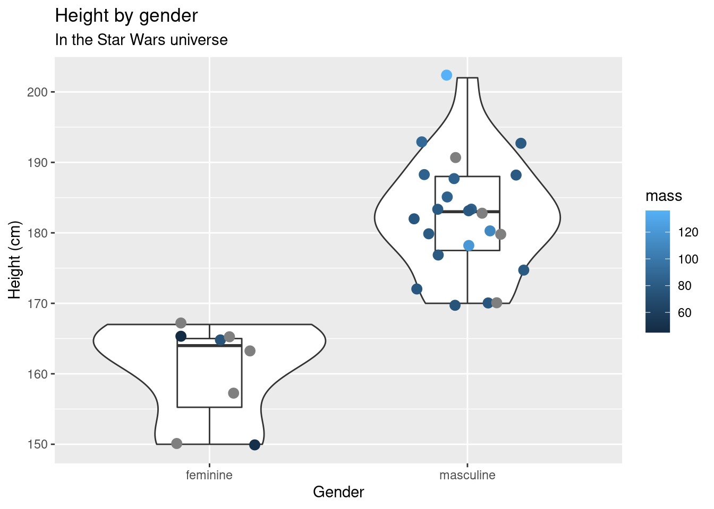
Histograms
ggplot(data = sw_human_data, aes(x = height)) +
geom_histogram(binwidth = 10) +
labs(title = "Height histogram", subtitle = "In the Star Wars universe",x = "Height (cm)")## Warning: Removed 4 rows containing non-finite values (stat_bin).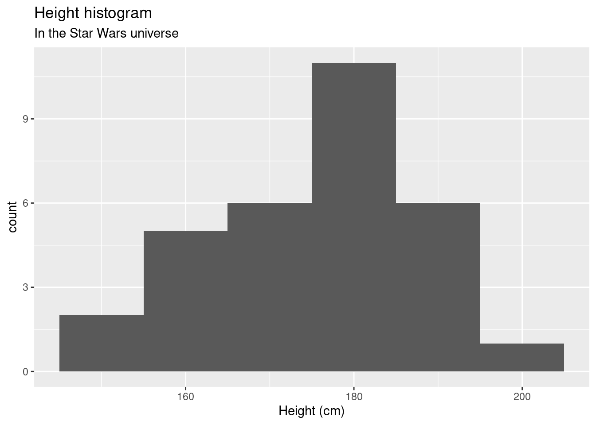
Different binwidths have an effect on the shape of the histogram.
ggplot(data = sw_human_data, aes(x = height)) +
geom_histogram(binwidth = 10) +
geom_histogram(binwidth = 3, fill = "red") +
labs(title = "Height histogram", subtitle = "In the Star Wars universe",x = "Height (cm)")## Warning: Removed 4 rows containing non-finite values (stat_bin).
## Removed 4 rows containing non-finite values (stat_bin).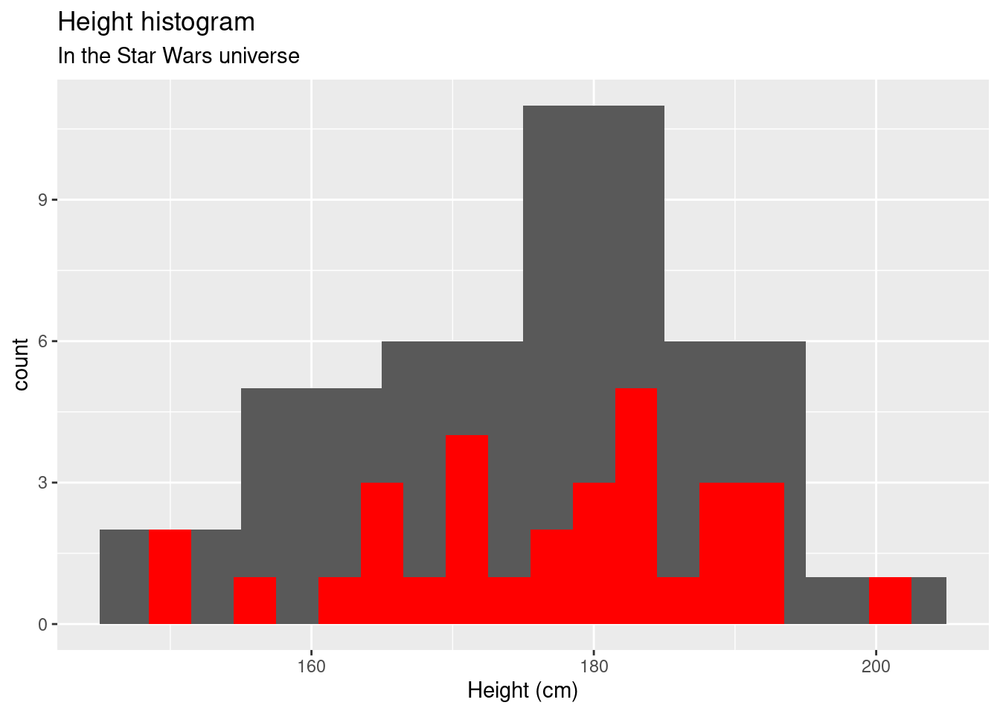
sw_nonhuman_data <-
starwars %>%
mutate(human = ifelse(species == "Human", "Human", "Non-Human"))
ggplot(data = sw_nonhuman_data, aes(x = height, fill = human)) +
geom_histogram(binwidth = 10) +
labs(title = "Height histogram", subtitle = "In the Star Wars universe",x = "Height (cm)")## Warning: Removed 6 rows containing non-finite values (stat_bin).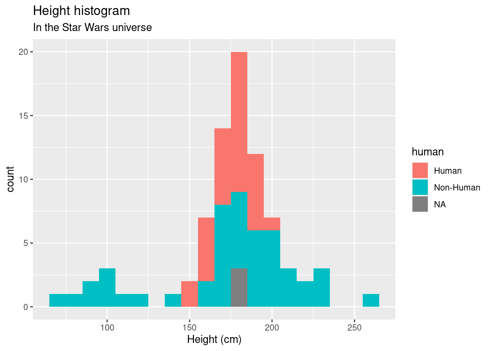
In this final plot we’ll connect points and we’ll deal with object type problems.
We’ll simulate data so that we have multiple measurements for an individual.
data <-
data.frame(ID = rep(c("a", "b", "c", "d"), times = 2),
week = rep(c(1, 2), each = 4),
measure = c(rnorm(4, 5, 2),
rnorm(4, 10, 2)))
str(data)## 'data.frame': 8 obs. of 3 variables:
## $ ID : chr "a" "b" "c" "d" ...
## $ week : num 1 1 1 1 2 2 2 2
## $ measure: num 6.471 4.637 0.503 4.659 6.449 ...First, let’s plot the data to see if there is a difference between weeks.
ggplot(data = data, aes(x = week, y = measure)) +
geom_boxplot() +
geom_point()## Warning: Continuous x aesthetic -- did you forget aes(group=...)?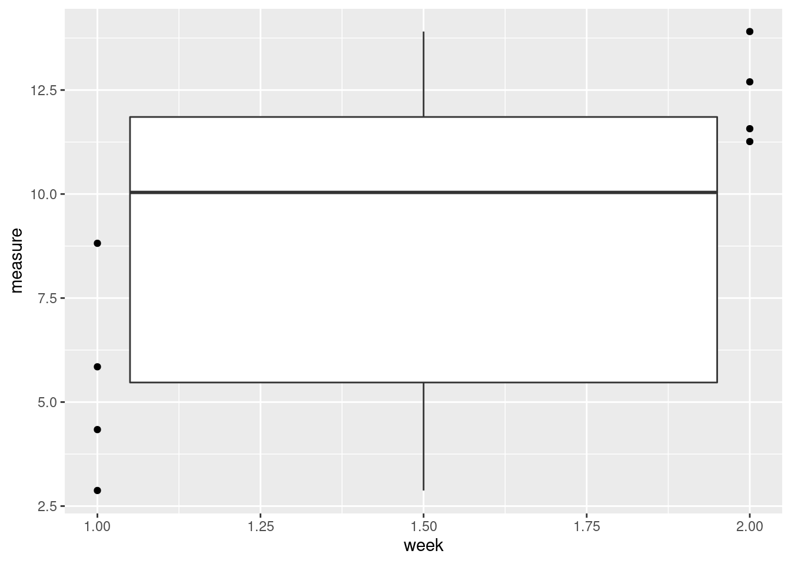
That seems wrong. What happened?
R interprets “week” as a continuous variable. We want to treat it as a factor.
ggplot(data = data, aes(x = as.factor(week), y = measure)) +
geom_boxplot() +
geom_point()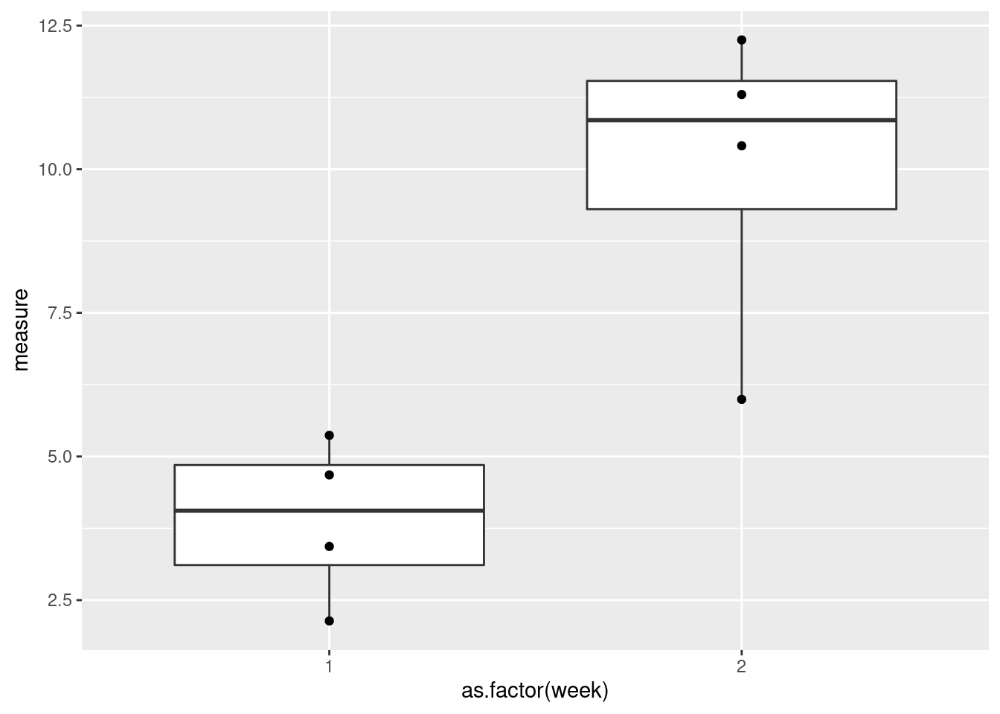
That’s better!
Now, let’s connect the points by subject ID.
ggplot(data = data, aes(x = as.factor(week), y = measure)) +
geom_boxplot() +
geom_point() +
geom_path(aes(group = ID))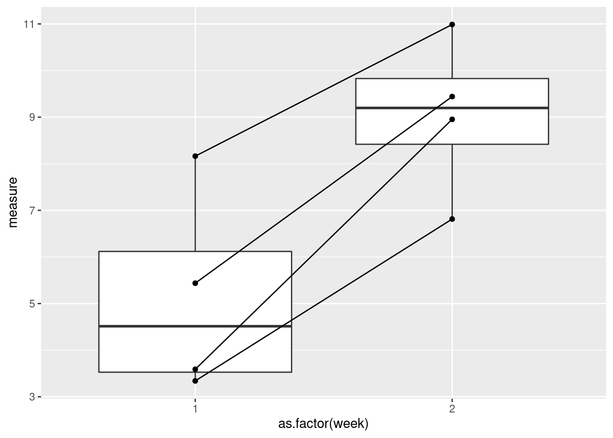
Summary
ggplot2 gives you a lot of power and flexibility to make
really nice visualizations. It can’t do everything though. There are
packages, however, that build on ggplot2. You can even
create interactive 3D plots and animations. It does take a bit of time
to get used to the syntax and you will spend a lot of time on Google
(even for things you’ve done multiple times). But once you get familiar
with it, you’ll have a lot of fun creating beautiful plots!
================================================================================
Session information:
Last update on 2020-11-12
sessionInfo()## R version 4.2.1 (2022-06-23)
## Platform: x86_64-pc-linux-gnu (64-bit)
## Running under: Ubuntu 20.04.5 LTS
##
## Matrix products: default
## BLAS: /usr/lib/x86_64-linux-gnu/blas/libblas.so.3.9.0
## LAPACK: /usr/lib/x86_64-linux-gnu/lapack/liblapack.so.3.9.0
##
## locale:
## [1] LC_CTYPE=en_US.UTF-8 LC_NUMERIC=C
## [3] LC_TIME=de_AT.UTF-8 LC_COLLATE=en_US.UTF-8
## [5] LC_MONETARY=de_AT.UTF-8 LC_MESSAGES=en_US.UTF-8
## [7] LC_PAPER=de_AT.UTF-8 LC_NAME=C
## [9] LC_ADDRESS=C LC_TELEPHONE=C
## [11] LC_MEASUREMENT=de_AT.UTF-8 LC_IDENTIFICATION=C
##
## attached base packages:
## [1] stats graphics grDevices utils datasets methods base
##
## other attached packages:
## [1] RColorBrewer_1.1-3 tidyr_1.2.0 dplyr_1.0.10 ggplot2_3.3.6
##
## loaded via a namespace (and not attached):
## [1] highr_0.9 bslib_0.4.0 compiler_4.2.1 pillar_1.8.1
## [5] jquerylib_0.1.4 tools_4.2.1 digest_0.6.29 lattice_0.20-45
## [9] nlme_3.1-160 jsonlite_1.8.0 evaluate_0.16 lifecycle_1.0.1
## [13] tibble_3.1.8 gtable_0.3.0 mgcv_1.8-40 pkgconfig_2.0.3
## [17] rlang_1.0.5 Matrix_1.4-1 DBI_1.1.2 cli_3.3.0
## [21] rstudioapi_0.14 yaml_2.3.5 xfun_0.32 fastmap_1.1.0
## [25] withr_2.5.0 stringr_1.4.1 knitr_1.40 generics_0.1.3
## [29] sass_0.4.2 vctrs_0.4.1 tidyselect_1.1.2 grid_4.2.1
## [33] glue_1.6.2 R6_2.5.1 fansi_1.0.3 rmarkdown_2.16
## [37] farver_2.1.0 purrr_0.3.4 magrittr_2.0.3 splines_4.2.1
## [41] ellipsis_0.3.2 scales_1.2.0 htmltools_0.5.3 assertthat_0.2.1
## [45] colorspace_2.0-3 labeling_0.4.2 utf8_1.2.2 stringi_1.7.8
## [49] munsell_0.5.0 cachem_1.0.6================================================================================
Copyright © 2022 Dan C. Mann. All rights reserved.